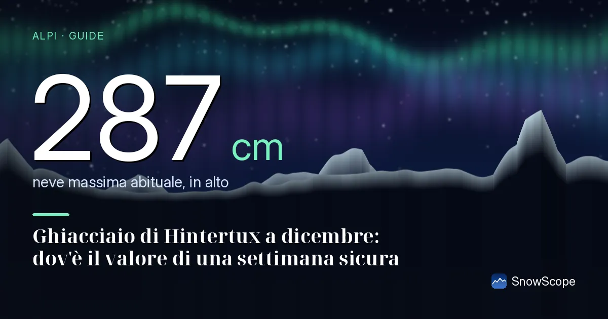

Ghiacciaio di Hintertux a dicembre: dov'è il valore di una settimana sicura
Prima il numero chiave: in un tipico 15 dicembre la parte alta del ghiacciaio di Hintertux (3245 m) ha 98 cm di neve nei nostri 46 inverni di storico, e nella settimana dal 15 al 21 dicembre ogni singolo inverno aveva lassù almeno 30 cm. La questione del valore quindi non è la neve, ma il prezzo e la parte bassa della montagna.
Le previsioni neve in tempo reale per Hintertuxer Gletscher nell'app SnowScopeAltezza neve, allerte powder e mappa 3D, gratis.
Neve: ok
Hintertux è uno dei pochi posti delle Alpi dove la neve di dicembre in alto è quasi certa. A metà montagna (2372 m) un tipico 15 dicembre ha 52 cm, e l'87 % dei nostri inverni aveva almeno 30 cm nella settimana dal 15 al 21 dicembre; nella settimana di Natale il 93 %.
Gli anni magri esistono, ma anche allora il ghiacciaio funziona: in 1 inverno su 10 in alto ci sono solo 44 cm il 15 dicembre. L'inverno scorso, uno dei più deboli, aveva comunque 44 cm in alto quel giorno.


Prezzo: ok
Il listino ufficiale 2026-27 ha una sola tariffa per tutta la stagione: giornaliero adulti 82 EUR, 6 giorni 399 EUR. Non esiste una fascia più economica prima di Natale: qui dicembre non costa meno di febbraio.
Il vero risparmio è per le famiglie: secondo il listino ufficiale, i bambini nati dopo l'1 gennaio 2021 sciano gratis con un adulto (serve un documento). Per una famiglia con un bimbo piccolo conta più di qualsiasi sconto stagionale.
La quota e la questione ghiacciaio
Il punto debole è la valle. L'impianto più basso è a 1500 m, dove un tipico 15 dicembre ha 16 cm e solo il 7 % dei nostri inverni aveva 30 cm nella settimana dal 15 al 21 dicembre. Il primo giorno abituale con 30 cm laggiù è il 7 gennaio. A dicembre si scia in alto e si scende in funivia.
La tendenza è mista. A metà montagna la media di dicembre è scesa da 54 cm nei primi 15 inverni a 45 cm negli ultimi 15, mentre in vetta ha tenuto (95 e 101 cm). Il ghiacciaio salva dicembre; le perdite si vedono più in basso.
A confronto: il Kitzsteinhorn
Il Kitzsteinhorn sopra Kaprun ha lo stesso schema: 137 cm in vetta a 3024 m in un tipico 15 dicembre, 40 cm a metà montagna (1894 m) e quasi niente alla base di 765 m (6 cm). I prezzi sono più alti: 82 EUR al giorno in alta stagione e 440 EUR per 6 giorni, oppure 74 EUR e 396 EUR a inizio stagione.
Stesso prezzo giornaliero, settimana più economica e più neve a metà montagna a Hintertux (52 cm contro 40 cm). Per uno skipass di 6 giorni a dicembre, Hintertux è l'affare migliore dei due ghiacciai.
Prima di prenotare
Hintertux non è il dicembre più economico d'Austria, ma per il suo prezzo è il più sicuro in alto. Sceglietelo se avete una sola settimana, date fisse e nessuna voglia di scommettere sulla neve. Se potete aspettare una buona previsione, una località in quota con prezzo pre-natalizio può costare meno.
Consigli per sciatori
- A dicembre programmate la metà alta (da circa 2372 m) e scendete a valle in impianto: le piste di rientro sono raramente innevate.
- Portate un documento per i bambini nati dopo l'1 gennaio 2021: sciano gratis con un adulto.
- Un ghiacciaio a 3245 m a dicembre può essere molto freddo e ventoso: scaldacollo e guanti di ricambio.
- Fuoripista sul ghiacciaio = crepacci: solo con una guida e dopo il bollettino valanghe del Tirolo.
Altre mappe (siti esterni)
Riferimenti e crediti
- Hintertuxer Gletscher: official lift-pass prices (2026-27), checked 13 November 2026 www.hintertuxergletscher.at/en/tickets-rates/tickets-rates/rates-hintertux-glacier/
- Kitzsteinhorn (Kaprun): official lift-pass prices (2026-27), checked 13 November 2026 www.kitzsteinhorn.at/en/tickets-prices/ski-board
Su questi numeri
Numeri della neve: storico neve SnowScope, 46 inverni passati (1980-81 - 2025-26) alle quote della località, corretto per la quota (una stima per un'area, non i bollettini della località); "buona neve" = 30 cm o più al suolo in media nella settimana. Mappa: la nostra altezza abituale al 15 dicembre distribuita sul terreno secondo la quota. Piste e impianti: mappatura OpenSkiMap. Skipass: listini ufficiali delle località, verificati il 13 novembre 2026; i prezzi possono cambiare.
Bollettini valanghe ufficiali: Avalanche.report – Euregio Tyrol
Cita questo articolo
Per ricerca, didattica o stampa: numeri e grafici sono liberamente riutilizzabili con licenza CC BY 4.0 citando così.
SnowScope (2026), Ghiacciaio di Hintertux a dicembre: dov'è il valore di una settimana sicura, https://snowscope.app/blog/it/2026/11/hintertux-glacier-december-value-ski-week.html, consultato il 2026-11-14
SnowScope (Atlas Labs). (2026, November 14). Ghiacciaio di Hintertux a dicembre: dov'è il valore di una settimana sicura. SnowScope snow reports. https://snowscope.app/blog/it/2026/11/hintertux-glacier-december-value-ski-week.html
BibTeX
@misc{snowscope2026hintertuxglacierdecember,
author = {{SnowScope (Atlas Labs)}},
title = {Ghiacciaio di Hintertux a dicembre: dov'è il valore di una settimana sicura},
year = {2026},
month = nov,
howpublished = {\url{https://snowscope.app/blog/it/2026/11/hintertux-glacier-december-value-ski-week.html}},
note = {Published 2026-11-14 13:29 UTC; accessed 2026-11-14}
}· CC BY 4.0 · Metodi, dati e strumenti →
Hintertuxer Gletscher: neve e temperatura per quota, quest'inverno vs lo scorso (strumenti) →
Segui Hintertuxer Gletscher
Gratis: un messaggio quando arriva la neve e il meteo ogni mattina.
Altri bollettini neve

Dieci stazioni sciistiche europee classificate per il valore di dicembre, guidate da Les 2 Alpes con 75 cm di neve a metà montagna.

Confronta le probabilità di neve a dicembre e i prezzi verificati degli skipass a partire da 40,00 EUR nelle aree sciistiche italiane per la tua gita in auto nel weekend.